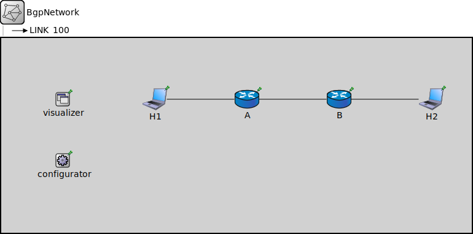

Package: inet.examples.bgpv4.BgpUpdate
BgpNetwork
network(no description)
Usage diagram
The following diagram shows usage relationships between types. Unresolved types are missing from the diagram.
Properties
| Name | Value | Description |
|---|---|---|
| isNetwork |
Unassigned submodule parameters
| Name | Type | Default value | Description |
|---|---|---|---|
| configurator.minLinkWeight | double | 1E-3 | |
| configurator.configureIsolatedNetworksSeparatly | bool | false | |
| configurator.assignAddresses | bool | true |
assign IP addresses to all interfaces in the network |
| configurator.assignUniqueAddresses | bool | true |
avoid using the same address and raise an error if not possible |
| configurator.assignDisjunctSubnetAddresses | bool | true |
avoid using the same address prefix and netmask on different links when assigning IP addresses to interfaces |
| configurator.addDirectRoutes | bool | true |
add direct routes (i.e. directly connected interfaces) to the routing table (used only if addStaticRoutes is true) |
| configurator.optimizeRoutes | bool | true |
optimize routing tables by merging routes, the resulting routing table might route more packets than the original (used only if addStaticRoutes is true) |
| configurator.dumpTopology | bool | false |
print extracted network topology to the module output |
| configurator.dumpLinks | bool | false |
print recognized network links to the module output |
| configurator.dumpAddresses | bool | false |
print assigned IP addresses for all interfaces to the module output |
| configurator.dumpRoutes | bool | false |
print configured and optimized routing tables for all nodes to the module output |
| configurator.dumpConfig | string | "" |
write configuration into the given config file that can be fed back to speed up subsequent runs (network configurations) |
| A.interfaceTable.displayAddresses | bool | false |
whether to display IP addresses on links |
| A.ospf.interfaceTableModule | string | ||
| A.ospf.routingTableModule | string | ||
| A.ospf.crcMode | string | "declared" | |
| A.ospf.startupTime | double | 0s |
delay before starting OSPF |
| A.ospf.ospfConfig | xml | xml(" |
xml containing the full OSPF AS configuration |
| A.ospf.routerPriority | int | 1 |
Priority in DR/BDR election (Specify 0 to exclude the router from the election) |
| A.ospf.areaID | string | "0.0.0.0" | |
| A.ospf.RFC1583Compatible | bool | false |
if 'false', prune the set of routing table entries for the ASBR (RFC 3101) |
| A.ospf.DistributeDefaultRoute | bool | false |
distribute the default route (if exists) using AS-External LSA |
| A.ospf.helloInterval | int | 10s |
specifies the time in seconds between hello packets that the other router sends on an interface |
| A.ospf.pollInterval | int | 120s |
specifies the length of time, in seconds, between OSPF packets that the router send before adjacency is established with a neighbor |
| A.ospf.routerDeadInterval | int | 40s |
the interval during which at least one hello packet must be received from a neighbor before the router declares that neighbor as down |
| A.ospf.retransmissionInterval | int | 5s |
The time between OSPF LSA retransmissions for adjacencies that belongs to the interface |
| A.ospf.interfaceTransmissionDelay | int | 1s |
The number of seconds required to transmit a link state update packet. Valid values are 1 to 65535 |
| A.ospf.interfaceMode | string | "Active" |
NoOSPF: the interface is not advertized by OSPF Passive: the interface is advertised, but no OSPF message is send out |
| A.ospf.referenceBandwidth | int | 1e8bps |
reference bandwidth for cost calculation |
| A.ospf.interfaceOutputCost | int | 0 |
cost of link on the interface (1-1000), 0 means use reference bandwidth |
| A.ospf.externalInterfaceOutputCost | int | 1 |
cost of link (1-1000) |
| A.ospf.externalInterfaceOutputType | string | "Type2" |
Type1|Type2 |
| A.ospf.forwardingAddress | string | "0.0.0.0" | |
| A.ospf.linkCost | int | 1 |
cost of link (1-1000) for HostInterface and LoopbackInterface only |
| A.ospf.authenticationType | string | "NullType" | |
| A.ospf.authenticationKey | string | "0x00" |
0xnn..nn |
| A.bgp.interfaceTableModule | string | ||
| A.bgp.routingTableModule | string | ||
| A.bgp.startupTime | double | 0s |
delay before starting BGP |
| A.bgp.bgpConfig | xml | ||
| A.bgp.ExternalPeerStartDelayOffset | double | 0.5s | |
| A.bgp.redistributeRip | bool | false |
redistribute routes learned by RIP into BGP |
| A.bgp.redistributeOspf | string | "" |
redistribute routes learned by OSPF into BGP (O IA E1 E2) |
| A.bgp.redistributeInternal | bool | false |
redistribute BGP routes into OSPF (as external routes) |
| A.bgp.nextHopSelf | bool | false | |
| A.bgp.localPreference | int | 100 | |
| A.bgp.connectedCheck | bool | true | |
| A.bgp.ebgpMultihop | int | 1 | |
| A.snifferIn.config | xml |
Configuration file |
|
| A.snifferOut.config | xml |
Configuration file |
|
| A.tn.displayStringTextFormat | string | "processed %p pk (%l)" |
determines the text that is written on top of the submodule |
| A.tn.forwardServiceRegistration | bool | true | |
| A.tn.forwardProtocolRegistration | bool | true | |
| A.ipv4.routingTable.interfaceTableModule | string |
The path to the InterfaceTable module |
|
| A.ipv4.routingTable.routerId | string | "auto" |
for routers, the router id using IPv4 address dotted notation; specify "auto" to select the highest interface address; should be left empty ("") for hosts |
| A.ipv4.routingTable.netmaskRoutes | string | "*" |
maintain netmask routes for interfaces |
| A.ipv4.routingTable.forwarding | bool | true |
turns IP forwarding on/off |
| A.ipv4.routingTable.multicastForwarding | bool | false |
turns multicast forwarding on/off |
| A.ipv4.routingTable.useAdminDist | bool | false |
Use Cisco like administrative distances |
| A.ipv4.routingTable.routingFile | string | "" |
routing table file name |
| A.ipv4.natTable.networkProtocolModule | string | "^.ip" | |
| A.ipv4.natTable.config | xml | xml(" |
XML configuration parameters for network address translation |
| A.ipv4.up.displayStringTextFormat | string | "processed %p pk (%l)" |
determines the text that is written on top of the submodule |
| A.ipv4.up.forwardServiceRegistration | bool | true | |
| A.ipv4.up.forwardProtocolRegistration | bool | true | |
| A.ipv4.icmp.interfaceTableModule | string |
The path to the InterfaceTable module |
|
| A.ipv4.icmp.routingTableModule | string | ||
| A.ipv4.icmp.crcMode | string | "declared" | |
| A.ipv4.icmp.quoteLength | int | 8B |
Number of bytes from original packet to quote in ICMP reply |
| A.ipv4.mp.displayStringTextFormat | string | "processed %p pk (%l)" |
determines the text that is written on top of the submodule |
| A.ipv4.mp.forwardServiceRegistration | bool | true | |
| A.ipv4.mp.forwardProtocolRegistration | bool | true | |
| A.ipv4.lp.displayStringTextFormat | string | "processed %p pk (%l)" |
determines the text that is written on top of the submodule |
| A.ipv4.lp.forwardServiceRegistration | bool | true | |
| A.ipv4.lp.forwardProtocolRegistration | bool | true | |
| A.nl.displayStringTextFormat | string | "processed %p pk (%l)" |
determines the text that is written on top of the submodule |
| A.nl.forwardServiceRegistration | bool | true | |
| A.nl.forwardProtocolRegistration | bool | true | |
| A.li.displayStringTextFormat | string | "processed %p pk (%l)" |
determines the text that is written on top of the submodule |
| A.li.forwardServiceRegistration | bool | true | |
| A.li.forwardProtocolRegistration | bool | true | |
| A.eth.bitrate | double | ||
| B.interfaceTable.displayAddresses | bool | false |
whether to display IP addresses on links |
| B.ospf.interfaceTableModule | string | ||
| B.ospf.routingTableModule | string | ||
| B.ospf.crcMode | string | "declared" | |
| B.ospf.startupTime | double | 0s |
delay before starting OSPF |
| B.ospf.ospfConfig | xml | xml(" |
xml containing the full OSPF AS configuration |
| B.ospf.routerPriority | int | 1 |
Priority in DR/BDR election (Specify 0 to exclude the router from the election) |
| B.ospf.areaID | string | "0.0.0.0" | |
| B.ospf.RFC1583Compatible | bool | false |
if 'false', prune the set of routing table entries for the ASBR (RFC 3101) |
| B.ospf.DistributeDefaultRoute | bool | false |
distribute the default route (if exists) using AS-External LSA |
| B.ospf.helloInterval | int | 10s |
specifies the time in seconds between hello packets that the other router sends on an interface |
| B.ospf.pollInterval | int | 120s |
specifies the length of time, in seconds, between OSPF packets that the router send before adjacency is established with a neighbor |
| B.ospf.routerDeadInterval | int | 40s |
the interval during which at least one hello packet must be received from a neighbor before the router declares that neighbor as down |
| B.ospf.retransmissionInterval | int | 5s |
The time between OSPF LSA retransmissions for adjacencies that belongs to the interface |
| B.ospf.interfaceTransmissionDelay | int | 1s |
The number of seconds required to transmit a link state update packet. Valid values are 1 to 65535 |
| B.ospf.interfaceMode | string | "Active" |
NoOSPF: the interface is not advertized by OSPF Passive: the interface is advertised, but no OSPF message is send out |
| B.ospf.referenceBandwidth | int | 1e8bps |
reference bandwidth for cost calculation |
| B.ospf.interfaceOutputCost | int | 0 |
cost of link on the interface (1-1000), 0 means use reference bandwidth |
| B.ospf.externalInterfaceOutputCost | int | 1 |
cost of link (1-1000) |
| B.ospf.externalInterfaceOutputType | string | "Type2" |
Type1|Type2 |
| B.ospf.forwardingAddress | string | "0.0.0.0" | |
| B.ospf.linkCost | int | 1 |
cost of link (1-1000) for HostInterface and LoopbackInterface only |
| B.ospf.authenticationType | string | "NullType" | |
| B.ospf.authenticationKey | string | "0x00" |
0xnn..nn |
| B.bgp.interfaceTableModule | string | ||
| B.bgp.routingTableModule | string | ||
| B.bgp.startupTime | double | 0s |
delay before starting BGP |
| B.bgp.bgpConfig | xml | ||
| B.bgp.ExternalPeerStartDelayOffset | double | 0.5s | |
| B.bgp.redistributeRip | bool | false |
redistribute routes learned by RIP into BGP |
| B.bgp.redistributeOspf | string | "" |
redistribute routes learned by OSPF into BGP (O IA E1 E2) |
| B.bgp.redistributeInternal | bool | false |
redistribute BGP routes into OSPF (as external routes) |
| B.bgp.nextHopSelf | bool | false | |
| B.bgp.localPreference | int | 100 | |
| B.bgp.connectedCheck | bool | true | |
| B.bgp.ebgpMultihop | int | 1 | |
| B.snifferIn.config | xml |
Configuration file |
|
| B.snifferOut.config | xml |
Configuration file |
|
| B.tn.displayStringTextFormat | string | "processed %p pk (%l)" |
determines the text that is written on top of the submodule |
| B.tn.forwardServiceRegistration | bool | true | |
| B.tn.forwardProtocolRegistration | bool | true | |
| B.ipv4.routingTable.interfaceTableModule | string |
The path to the InterfaceTable module |
|
| B.ipv4.routingTable.routerId | string | "auto" |
for routers, the router id using IPv4 address dotted notation; specify "auto" to select the highest interface address; should be left empty ("") for hosts |
| B.ipv4.routingTable.netmaskRoutes | string | "*" |
maintain netmask routes for interfaces |
| B.ipv4.routingTable.forwarding | bool | true |
turns IP forwarding on/off |
| B.ipv4.routingTable.multicastForwarding | bool | false |
turns multicast forwarding on/off |
| B.ipv4.routingTable.useAdminDist | bool | false |
Use Cisco like administrative distances |
| B.ipv4.routingTable.routingFile | string | "" |
routing table file name |
| B.ipv4.natTable.networkProtocolModule | string | "^.ip" | |
| B.ipv4.natTable.config | xml | xml(" |
XML configuration parameters for network address translation |
| B.ipv4.up.displayStringTextFormat | string | "processed %p pk (%l)" |
determines the text that is written on top of the submodule |
| B.ipv4.up.forwardServiceRegistration | bool | true | |
| B.ipv4.up.forwardProtocolRegistration | bool | true | |
| B.ipv4.icmp.interfaceTableModule | string |
The path to the InterfaceTable module |
|
| B.ipv4.icmp.routingTableModule | string | ||
| B.ipv4.icmp.crcMode | string | "declared" | |
| B.ipv4.icmp.quoteLength | int | 8B |
Number of bytes from original packet to quote in ICMP reply |
| B.ipv4.mp.displayStringTextFormat | string | "processed %p pk (%l)" |
determines the text that is written on top of the submodule |
| B.ipv4.mp.forwardServiceRegistration | bool | true | |
| B.ipv4.mp.forwardProtocolRegistration | bool | true | |
| B.ipv4.lp.displayStringTextFormat | string | "processed %p pk (%l)" |
determines the text that is written on top of the submodule |
| B.ipv4.lp.forwardServiceRegistration | bool | true | |
| B.ipv4.lp.forwardProtocolRegistration | bool | true | |
| B.nl.displayStringTextFormat | string | "processed %p pk (%l)" |
determines the text that is written on top of the submodule |
| B.nl.forwardServiceRegistration | bool | true | |
| B.nl.forwardProtocolRegistration | bool | true | |
| B.li.displayStringTextFormat | string | "processed %p pk (%l)" |
determines the text that is written on top of the submodule |
| B.li.forwardServiceRegistration | bool | true | |
| B.li.forwardProtocolRegistration | bool | true | |
| B.eth.bitrate | double | ||
| H1.status.initialStatus | string | "UP" |
TODO @signal, @statistic |
| H1.pcapRecorder.verbose | bool | true |
whether to log packets on the module output |
| H1.pcapRecorder.pcapFile | string | "" |
the PCAP file to be written |
| H1.pcapRecorder.fileFormat | string | "pcapng" | |
| H1.pcapRecorder.snaplen | int | 65535 |
maximum number of bytes to record per packet |
| H1.pcapRecorder.dumpBadFrames | bool | true |
enable dump of frames with hasBitError |
| H1.pcapRecorder.moduleNamePatterns | string | "wlan[*] eth[*] ppp[*]" |
space-separated list of sibling module names to listen on |
| H1.pcapRecorder.sendingSignalNames | string | "packetSentToLower" |
space-separated list of outbound packet signals to subscribe to |
| H1.pcapRecorder.receivingSignalNames | string | "packetReceivedFromLower" |
space-separated list of inbound packet signals to subscribe to |
| H1.pcapRecorder.dumpProtocols | string | "ethernetmac ppp ieee80211mac" |
space-separated list of protocol names as defined in the Protocol class |
| H1.pcapRecorder.packetFilter | object | "*" |
which packets are considered, matches all packets by default |
| H1.pcapRecorder.helpers | string | "" |
usable PcapRecorder::IHelper helpers for accept packettype and store/convert packet as specified linktype currently available: "inet::AckingMacToEthernetPcapRecorderHelper" |
| H1.pcapRecorder.alwaysFlush | bool | false |
flush the pcapFile after each write to ensure that all packets are captured in case of a crash |
| H1.pcapRecorder.displayStringTextFormat | string | "rec: %n pks" | |
| H1.interfaceTable.displayAddresses | bool | false |
whether to display IP addresses on links |
| H1.cb.displayStringTextFormat | string | "processed %p pk (%l)" |
determines the text that is written on top of the submodule |
| H1.cb.forwardServiceRegistration | bool | true | |
| H1.cb.forwardProtocolRegistration | bool | true | |
| H1.bl.displayStringTextFormat | string | "processed %p pk (%l)" |
determines the text that is written on top of the submodule |
| H1.bl.forwardServiceRegistration | bool | true | |
| H1.bl.forwardProtocolRegistration | bool | true | |
| H1.li.displayStringTextFormat | string | "processed %p pk (%l)" |
determines the text that is written on top of the submodule |
| H1.li.forwardServiceRegistration | bool | true | |
| H1.li.forwardProtocolRegistration | bool | true | |
| H1.eth.bitrate | double | ||
| H1.nl.displayStringTextFormat | string | "processed %p pk (%l)" |
determines the text that is written on top of the submodule |
| H1.nl.forwardServiceRegistration | bool | true | |
| H1.nl.forwardProtocolRegistration | bool | true | |
| H1.tn.displayStringTextFormat | string | "processed %p pk (%l)" |
determines the text that is written on top of the submodule |
| H1.tn.forwardServiceRegistration | bool | true | |
| H1.tn.forwardProtocolRegistration | bool | true | |
| H1.at.displayStringTextFormat | string | "processed %p pk (%l)" |
determines the text that is written on top of the submodule |
| H1.at.forwardServiceRegistration | bool | true | |
| H1.at.forwardProtocolRegistration | bool | true | |
| H2.status.initialStatus | string | "UP" |
TODO @signal, @statistic |
| H2.pcapRecorder.verbose | bool | true |
whether to log packets on the module output |
| H2.pcapRecorder.pcapFile | string | "" |
the PCAP file to be written |
| H2.pcapRecorder.fileFormat | string | "pcapng" | |
| H2.pcapRecorder.snaplen | int | 65535 |
maximum number of bytes to record per packet |
| H2.pcapRecorder.dumpBadFrames | bool | true |
enable dump of frames with hasBitError |
| H2.pcapRecorder.moduleNamePatterns | string | "wlan[*] eth[*] ppp[*]" |
space-separated list of sibling module names to listen on |
| H2.pcapRecorder.sendingSignalNames | string | "packetSentToLower" |
space-separated list of outbound packet signals to subscribe to |
| H2.pcapRecorder.receivingSignalNames | string | "packetReceivedFromLower" |
space-separated list of inbound packet signals to subscribe to |
| H2.pcapRecorder.dumpProtocols | string | "ethernetmac ppp ieee80211mac" |
space-separated list of protocol names as defined in the Protocol class |
| H2.pcapRecorder.packetFilter | object | "*" |
which packets are considered, matches all packets by default |
| H2.pcapRecorder.helpers | string | "" |
usable PcapRecorder::IHelper helpers for accept packettype and store/convert packet as specified linktype currently available: "inet::AckingMacToEthernetPcapRecorderHelper" |
| H2.pcapRecorder.alwaysFlush | bool | false |
flush the pcapFile after each write to ensure that all packets are captured in case of a crash |
| H2.pcapRecorder.displayStringTextFormat | string | "rec: %n pks" | |
| H2.interfaceTable.displayAddresses | bool | false |
whether to display IP addresses on links |
| H2.cb.displayStringTextFormat | string | "processed %p pk (%l)" |
determines the text that is written on top of the submodule |
| H2.cb.forwardServiceRegistration | bool | true | |
| H2.cb.forwardProtocolRegistration | bool | true | |
| H2.bl.displayStringTextFormat | string | "processed %p pk (%l)" |
determines the text that is written on top of the submodule |
| H2.bl.forwardServiceRegistration | bool | true | |
| H2.bl.forwardProtocolRegistration | bool | true | |
| H2.li.displayStringTextFormat | string | "processed %p pk (%l)" |
determines the text that is written on top of the submodule |
| H2.li.forwardServiceRegistration | bool | true | |
| H2.li.forwardProtocolRegistration | bool | true | |
| H2.eth.bitrate | double | ||
| H2.nl.displayStringTextFormat | string | "processed %p pk (%l)" |
determines the text that is written on top of the submodule |
| H2.nl.forwardServiceRegistration | bool | true | |
| H2.nl.forwardProtocolRegistration | bool | true | |
| H2.tn.displayStringTextFormat | string | "processed %p pk (%l)" |
determines the text that is written on top of the submodule |
| H2.tn.forwardServiceRegistration | bool | true | |
| H2.tn.forwardProtocolRegistration | bool | true | |
| H2.at.displayStringTextFormat | string | "processed %p pk (%l)" |
determines the text that is written on top of the submodule |
| H2.at.forwardServiceRegistration | bool | true | |
| H2.at.forwardProtocolRegistration | bool | true |
Source code
network BgpNetwork { types: channel LINK_100 extends ThruputMeteringChannel { parameters: delay = 50us; datarate = 100Mbps; displayAsTooltip = true; thruputDisplayFormat = "#N"; } submodules: visualizer: IntegratedCanvasVisualizer { parameters: @display("p=100,100;is=s"); } configurator: Ipv4NetworkConfigurator { parameters: @display("p=100,200;is=s"); config = xmldoc("IPv4Config.xml"); addStaticRoutes = false; addDefaultRoutes = false; addSubnetRoutes = false; } A: BGPRouterEx { parameters: @display("p=400,100"); gates: pppg[1]; ethg[1]; } B: BGPRouterEx { parameters: @display("p=550,100"); gates: pppg[1]; ethg[1]; } H1: StandardHost { parameters: @display("p=250,100;i=device/laptop"); gates: ethg[1]; } H2: StandardHost { parameters: @display("p=700,100;i=device/laptop"); gates: ethg[1]; } connections: H1.ethg[0] <--> LINK_100 <--> A.ethg[0]; A.pppg[0] <--> LINK_100 <--> B.pppg[0]; B.ethg[0] <--> LINK_100 <--> H2.ethg[0]; }File: examples/bgpv4/BgpUpdate/Network.ned
 This documentation is released under the Creative Commons license
This documentation is released under the Creative Commons license